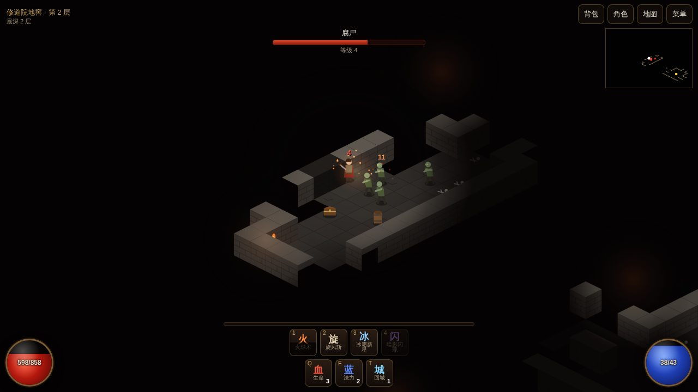
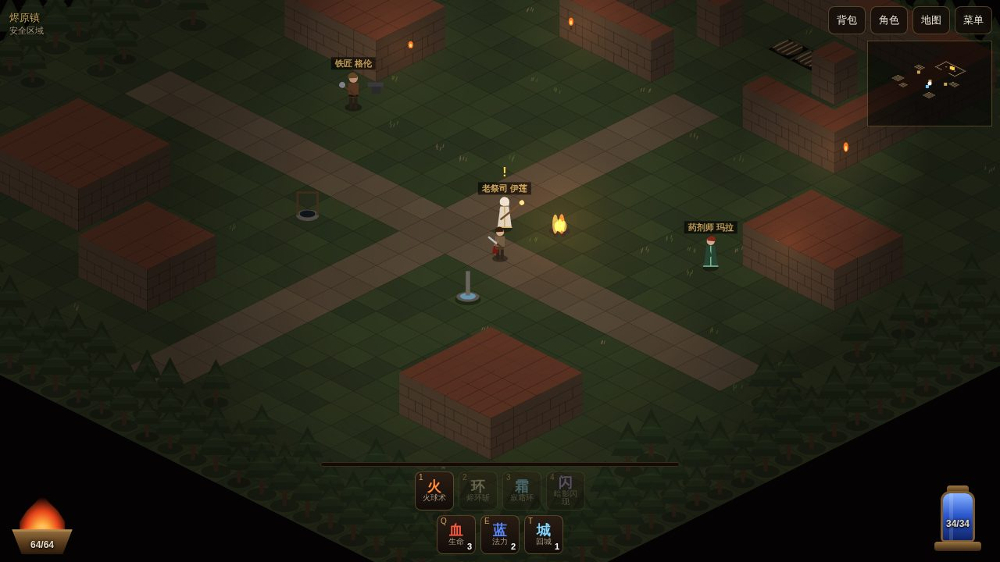
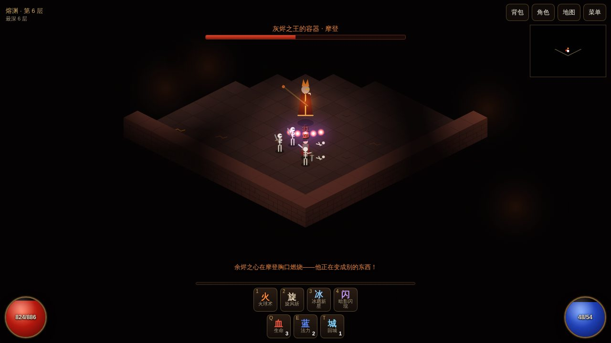

← 返回游戏中心
Ooglex Games · 原创暗黑风网页游戏
余烬陷落EMBERFALL
修道院的钟在午夜自己响了。院长带着修士们走进地窖，再也没有出来；从那以后，死者开始行走。你是一个途经烬原镇的流浪者——举起火把，走下台阶，看看黑暗里到底藏着什么。
免下载安装 · 电脑和手机浏览器都能玩 · 首次加载约 160 KB · 存档保存在你自己的浏览器里

网页版实机截图 · 地窖第 2 层，腐尸群来袭
类型2.5D 斜视角 · 动作角色扮演 · 地牢探索 · 刷装备
版本EMBERFALL V0.1 · 第一幕完整可玩
篇幅6 层主线 · 2 个首领 · 3 条任务 · 之后无尽深渊
技术Canvas 2D + 原生 JavaScript，画面与音效全部由代码生成
故事
三十年前，灰烬之王厄鲁斯从地底裂隙中爬出，焚毁了半个王国。圣焰修会以七位守誓者的性命为代价，把他封进一枚「余烬之心」，埋在修道院的最深处。烬原镇的人们以为噩梦已经结束。
「镇上能拿剑的人都已经下去过了，没有一个回来。」—— 老祭司 伊莲
第 1–2 层 · 修道院地窖腐尸、骸骨战士与火坑小鬼。查明地下发生了什么，回镇上告诉伊莲。
第 3–4 层 · 白骨墓穴铁匠格伦的学徒托比被「腐肉监工」莫格锁进了背上的囚笼。打倒他，把托比救出来。
第 5–6 层 · 熔渊封印大厅里，堕落院长摩登胸口的余烬之心正在燃烧……之后，是没有尽头的深渊。
玩法
- 点击即战斗点地面走路，点怪物挥剑，按住不放连续攻击
- 四个技能火球术、烬环斩、寂霜环、暗影闪现，随等级解锁
- 随机地牢每层房间和走廊随机生成，火把、宝箱、木桶、神殿
- 刷装备普通 / 魔法 / 稀有 / 传奇，16 种随机词缀
- 精英怪蓝名精英带「迅捷」「石肤」「嗜血」「焚烧」等特性
- 升级加点每级 5 点，分配到力量、体能、魔力
- 回城与传送回城卷轴开传送门，镇上传送石直达到过的楼层
- 首领战莫格会冲锋和暴怒；摩登会瞬移、召唤、放火环并二阶段变身
游戏画面

烬原镇：接任务、买卖装备、免费治疗
地牢：光照范围之外一片漆黑

第 6 层首领：堕落院长摩登
操作说明
电脑（鼠标 + 键盘）
左键移动 / 攻击 / 拾取 / 对话（按住持续）
Shift+左键原地攻击
右键火球术
1～4向鼠标位置释放技能
Q E生命药水 · 法力药水
T回城卷轴
I C Tab背包 · 角色 · 自动地图
WASD键盘移动（可选）
M Esc音效开关 · 菜单
手机 / 平板（触屏）
点地面移动，按住拖动持续移动
点怪物攻击，按住不放持续攻击
技能按钮自动瞄准最近的可见敌人
血 蓝 城喝药 · 回城
右上角背包 · 角色 · 地图 · 菜单
打开背包、角色、对话等面板时游戏自动暂停。竖屏、横屏都可以玩。
后续计划
- 更多职业（目前为一名近战与法术兼修的流浪者）与技能树
- 第二幕新区域、更多首领和套装
- 装备鉴定、耐久与宝石镶嵌
以上为规划，尚未实现。
3D 大作版正在开发中，可以先看 灰盒原型预览（模型为占位几何体）。
说明：《余烬陷落》是 Ooglex 的原创作品，致敬经典暗黑风动作角色扮演游戏的玩法类型；游戏中的人物、地名、剧情、美术与音效均为原创，由代码实时生成，
不包含任何其他游戏的程序、图像、音乐或文字素材，与暴雪娱乐（Blizzard Entertainment）及《暗黑破坏神》系列没有关联。
想玩正版《暗黑破坏神 IV》，请前往
暗黑破坏神 IV 官方入口。
存档保存在你当前浏览器的本地存储里：换浏览器、使用无痕模式或清除网站数据后存档会消失。